Heygo's sensors and app work together: they read every turn under your feet, explain it clearly, then tell you what to practice next run.
Reading the data, understanding the data, understanding you: it all ends up in the app as things you can see and follow.
Two sensors clip onto the sides of your left and right boots. Open the app and tap Go to start recording. No calibration moves needed. After a few turns it locks in where they're mounted.
Movements of both feet are recorded continuously at 100Hz. Heygo splits a run into segments and individual turns, recognizes whether you're carving or skidding, and records edge angle, speed and turn shape.
Every segment gets a Heygo IQ across four dimensions: Timing, Pressure, Flow and Similarity. Each time it compares you with your own past riding to find the issues that are yours.
After each run, a Run Report and voice recap are ready by the time you're on the chairlift. At the end of the day, a Day Report explains where the issue is, why, and which lesson to practice next run.
Every segment you ride gets a Heygo IQ. It's made of four dimensions, Timing, Pressure, Flow and Similarity, and under each one are advanced metrics you can open for details, all from the real movements of your feet.
The average of the four dimensions is 126, close to the total score of 125. You can see at a glance which dimension is holding you back.
In skidding, it also looks at how consistent your turns are with each other.
In carving, turn shape and load matter more.
Timing 133 · Whether you change edges when you should, and early enough.
How early you finish the edge change before the nose dives toward the fall line. The earlier, the more complete the top half of the arc, and the easier speed control is mid-turn.
How fast and steady the edge angle builds after the edge change.
Whether the pressure of the old turn is released in time and smoothly at the edge change.
Pressure 122 · How steady and strong the pressure is in the turn.
How much load you take in the turn. Load only builds when both speed and edge angle are there.
How fast the board changes direction within the turn, and whether that matches the target turn shape.
Whether you cross the fall line at turn exit, using a full turn shape to control speed naturally.
Whether pressure is applied and released through the turn in a continuous, focused, repeatable way.
Flow 138 · How connected your movements are, and how smoothly turns link.
Whether the turn is a round, full C shape, rather than a straight run followed by a sharp swing.
Whether the edge angle change, from flat to edged to release, is one smooth curve.
Whether the duration and size of linked turns are even.
Similarity 111 · Whether toeside and heelside are equally good, and whether each turn is steady and repeatable.
Whether toeside and heelside edging are alike.
Whether toeside and heelside turns have similar speed.
Whether toeside and heelside turn radii are similar, or your line drifts to one side.
The app also shows Toe Edge Similarity and Heel Edge Similarity separately, so you can see which side is less stable.
All numbers come from one real segment by the same rider on Oct 30.
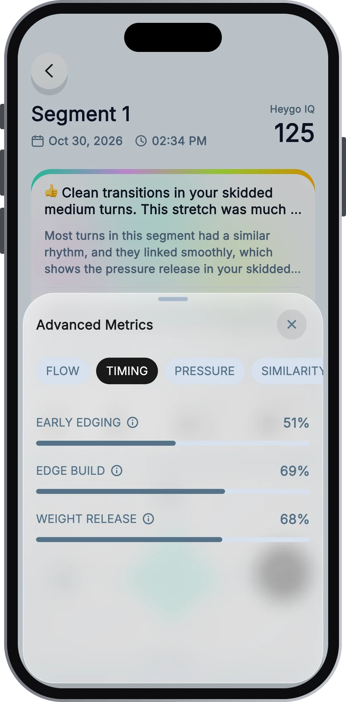
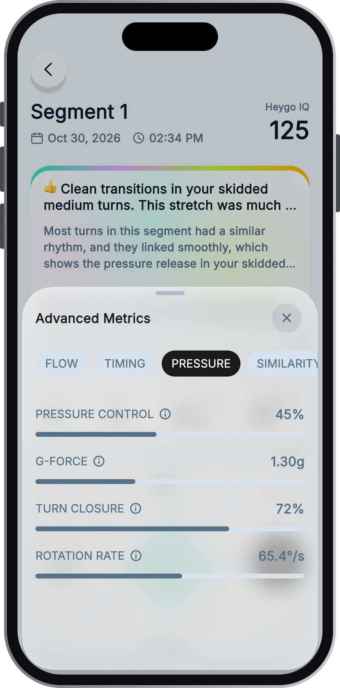
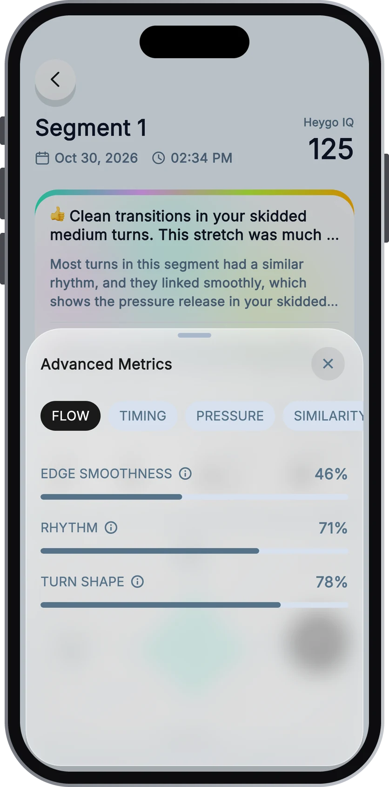
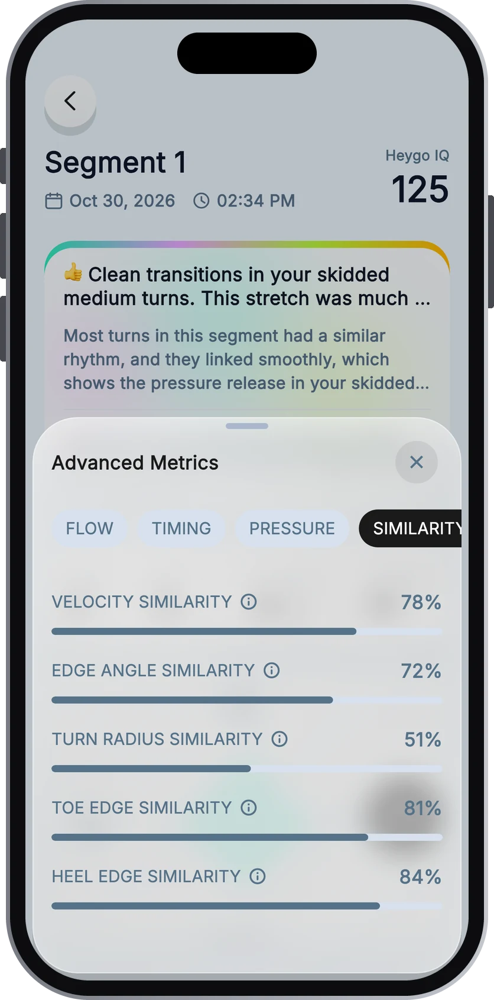
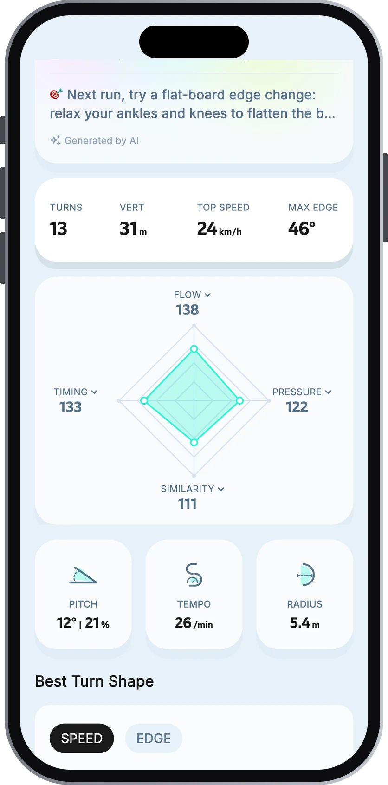
Besides Heygo IQ, every run and every segment records these basic stats automatically. You don't need to start or stop anything by hand.
Every screen below is the real Heygo App interface, with data from one snowboarder on one day on snow.
“11 runs done. Your skidding was better overall than last time on snow, and the last few runs lifted your form up another notch.” The very first sentence compares today with your last time out. It remembers how you rode last time.
Heygo Insight breaks today into four steps: Data (19 tail kicks recorded today, mostly on the heelside) → Cause (at the start of the turn the back foot moves first, before the nose has picked up the direction) → Skill (let your front foot change the edge angle first) → Drill.
Heygo IQ share puts today next to your previous day on snow, so you can see at a glance that more time went into higher score bands.
Timing, Pressure, Flow and Similarity lines change run by run. The dip on Run 6 and the recovery after it are easy to see.
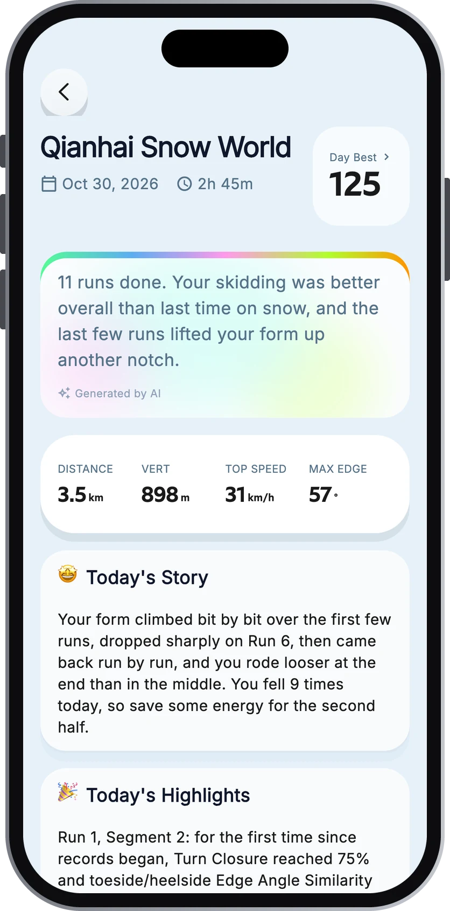
Back foot moves first and sweeps the tail
Front foot edges first, back foot follows
Bend front knee and ankle at the change
Weight forward, let the nose lead
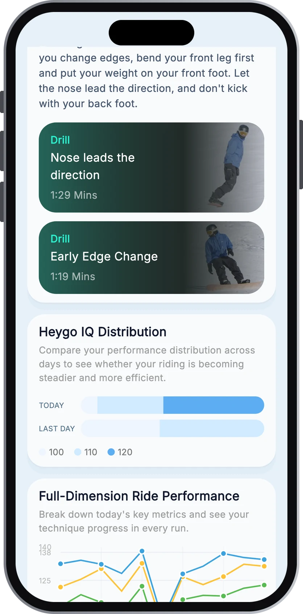
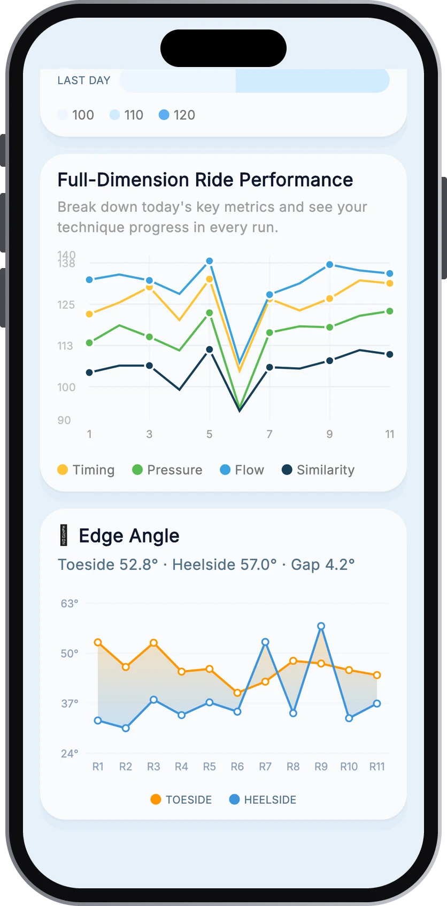
On Run 6 of this day the score dropped to 100. Run over Run lays it out: Turn Shape −25, Rhythm −18, Weight Release −16, Pressure Control −14.
“You keep putting off the edge change until the nose is almost pointing downhill, so the board spends longer accelerating down the slope and your speed keeps building.” The cause is tied to specific segments, and to toeside or heelside.
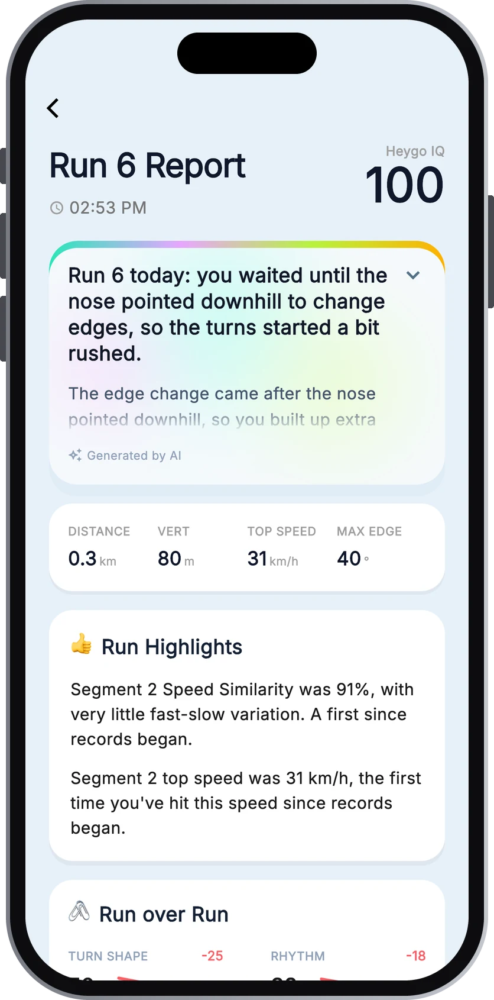
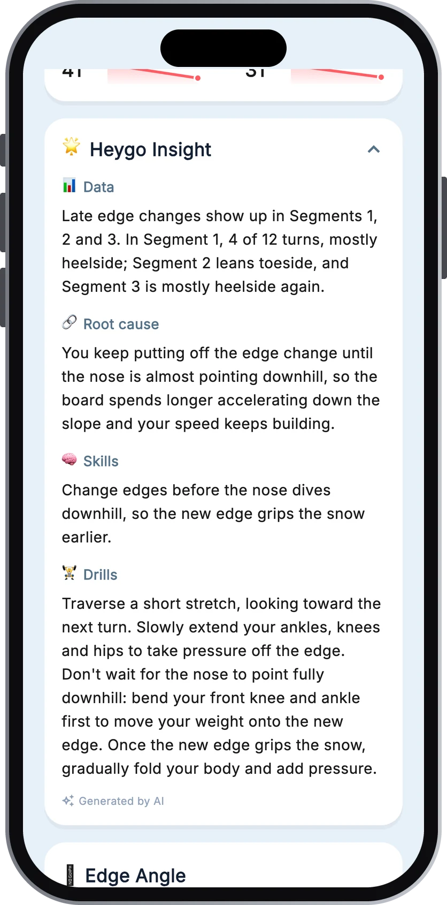
After the report points out the issue, it tells you what to do on the “Next run” and recommends the matching course, “Early Edge Change”.
Every lesson has a real-person demo video, split into parts by goal, release, edging and flat board, so you can skip around. Below are step-by-step tips you can just follow.
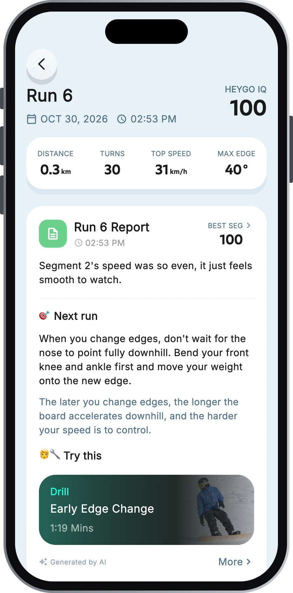
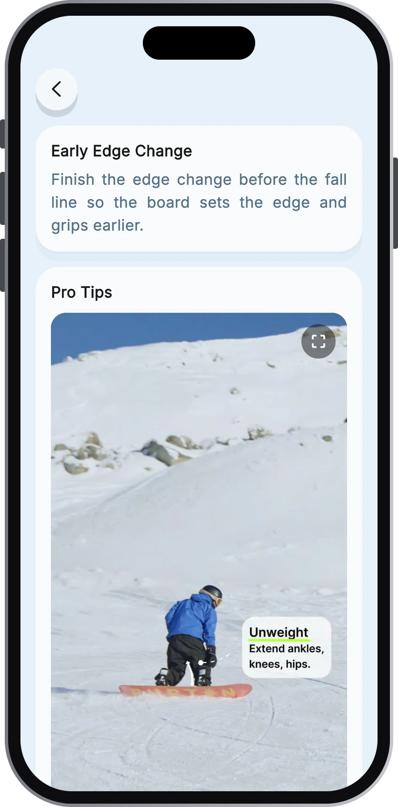
The best segment of the day, Heygo IQ 125: “Most turns in this segment had a similar rhythm, and they linked smoothly. The pressure release in transitions has become much steadier.”
Best Turn Shape is rebuilt from the real track. You can color it by speed or by edge angle, with toeside and heelside on each half.
13 turns, each with top speed, max edge angle and turn radius, with icons marking toeside and heelside turns.
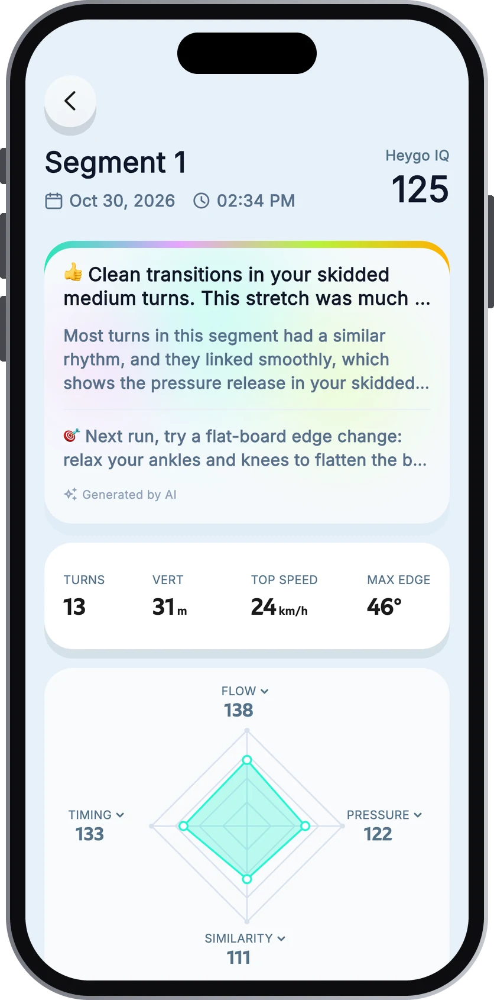
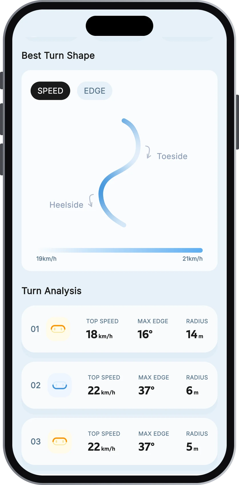
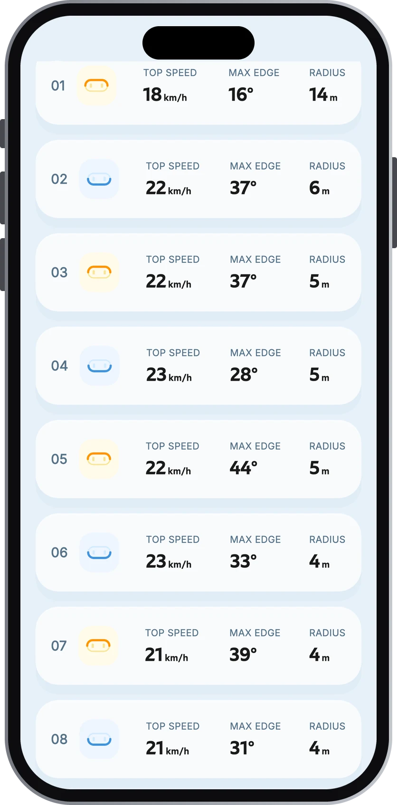
It goes through your history, boils the issues down to one or two things, and tells you which to practice first, how to practice it, and what it feels like when you get it right. Below is a real conversation.
It knows where you are now and gives you the next stage in order: after Early Edge Change comes body folding, and only then carving.
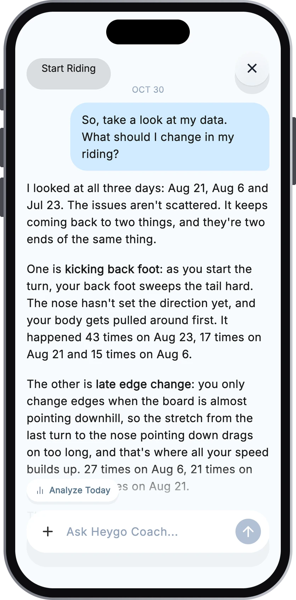
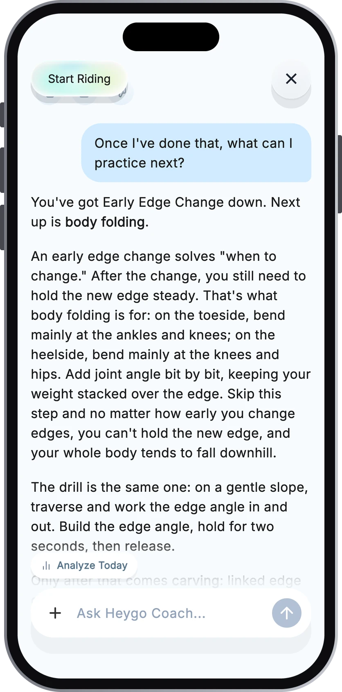
Three modes: Detailed, Concise and Silent. More cues when you're training hard, only the key points when you're riding for fun.
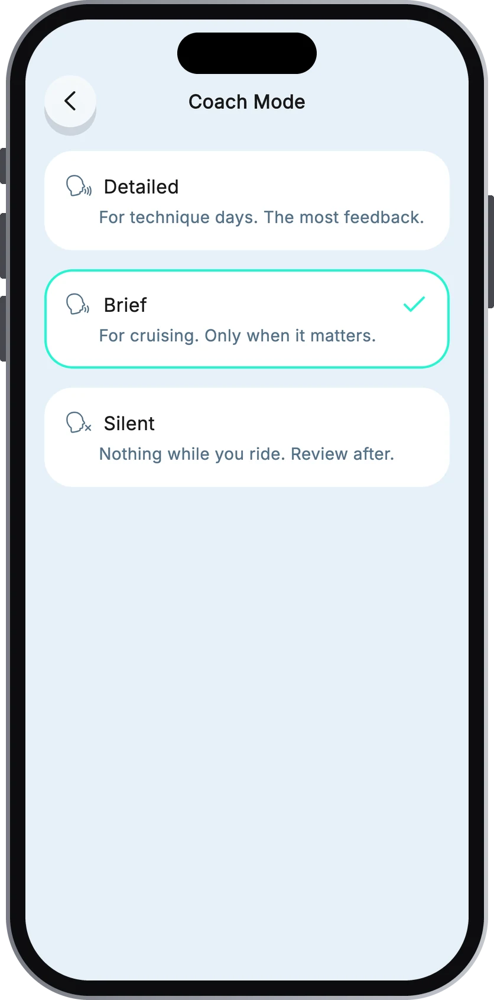
Sensors only understand numbers. Each stop moves those numbers one step closer to “something a coach can understand.” Open each stop to see how Heygo gets to know you step by step.
Content adapted from the Heygo × GLOW open class slides on Nov 1. Sample data comes from the same rider as above. Behind it are 2 million+ real riding sessions.